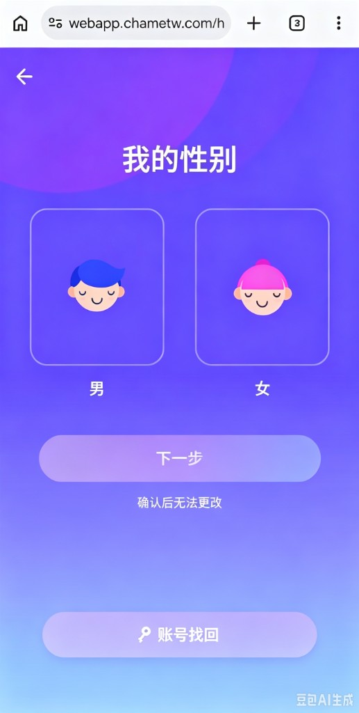
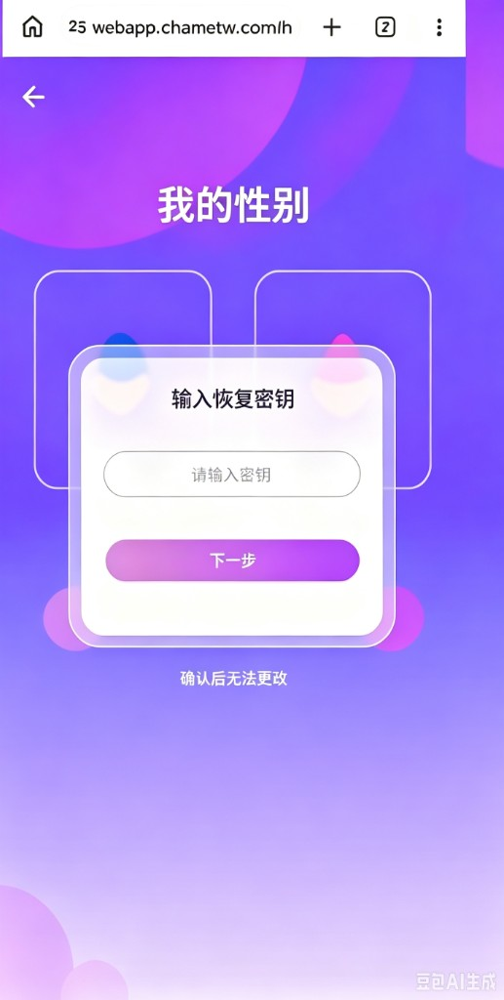

WebApp一键注册账号丢失分析与找回方案
基于2026年9月1日至9月7日注册且当天首充用户的留存表现
核心结论：一键注册首充用户的D1、D3、D7留存持续显著低于Google和手机号注册用户，表明该方式存在明显的账号持续访问风险，需要增加恢复密钥作为匿名账号找回兜底。
一、数据证据：一键注册首充用户留存明显偏低
统计口径：2026-09-01至2026-09-07注册且注册当天完成首充的WebApp用户；按最初注册方式分组。D1、D3、D7分别表示首充后第1、3、7个自然日成功登录。
首充用户留存率对比
一键注册
Google注册
手机号注册
40%30%20%10%0%
统一按0—40%比例展示｜样本：一键注册2,552人、Google注册1,010人、手机号注册231人
数据发现：一键注册用户在连续7个注册日的D1、D3、D7留存均低于两个对照组。加权D7留存比Google低8.72个百分点，相对低约64%；比手机号低10.64个百分点，相对低约68%。差异不是由某一天偶然波动造成。
一键注册首充用户：绑定状态留存对比
已绑定手机号
手机号和Google均未绑定
40%30%20%10%0%
统一按0—40%比例展示｜样本：已绑定手机号387人、均未绑定2,165人
进一步验证：在同为一键注册且注册当天首充的用户中，绑定手机号用户D7留存为11.89%，未绑定用户仅3.70%，前者达到后者的3.2倍。两组人均首充金额接近，说明稳定账号凭证与后续回访能力高度相关。
结论边界：留存差异能够证明一键注册付费用户存在显著的后续回访异常，与设备码变化后无法返回原账号的现象一致；但留存数据本身不能独立证明每个流失用户都发生了账号丢失。准确规模仍需补充“设备账号查询失败”服务端埋点。
二、问题原因
当前设计
一个设备码对应一个账号。用户一键登录时，服务端根据浏览器设备码查找账号。
核心缺陷
浏览器设备码会因Cookie清理、无痕模式、浏览器升级、WebView变化等原因改变，不能作为可靠的账号所有权凭证。
当前异常链路
用户已有
一键注册账号
一键注册账号
→
账号完成充值
并持有资产
并持有资产
→
浏览器设备码变化
→
设备码未匹配到账号
→
直接进入注册第一步
原账号无法识别
原账号无法识别
三、解决方案：恢复密钥兜底找回
恢复密钥是服务端随机生成、与账号一对一绑定的持有型凭证。它不依赖设备码，因此设备变化后仍可以定位原账号。
首次注册：生成并保存恢复密钥
一键注册成功
→
服务端生成至少128 bit随机密钥
→
账号ID与密钥Hash绑定
→
明文仅展示一次
复制或下载
复制或下载
→
用户确认已保存
数据库保存：account_id + SHA-256（恢复密钥）｜不保存密钥明文｜密钥不根据设备码、用户ID或时间生成
设备码变化：找回原账号
点击一键登录
→
设备码未匹配账号
进入注册第一步
进入注册第一步
→
页面展示
“账号找回”入口
“账号找回”入口
→
用户输入恢复密钥
→
服务端计算Hash并匹配账号
→
绑定新设备
登录原账号
登录原账号
页面交互示意


找回后的处理
- 校验恢复密钥：标准化输入后计算Hash，查询绑定的account_id。
- 执行风险判断：检查IP、国家、浏览器、尝试次数及账号资产等级。
- 新增设备关系：一个账号允许绑定多个设备，不覆盖原设备记录。
- 签发登录凭证：给新设备签发独立Refresh Token，后续不再单独依赖设备码。
- 轮换恢复密钥：找回成功后生成新密钥或消耗一次性恢复码，并记录安全审计。
分级验证策略
普通匿名账号恢复密钥校验成功后，可直接恢复并绑定新设备。
普通充值账号恢复密钥通过后，增加支付订单、原设备或风控验证。
高余额账号执行强二次验证，并对转账、提现等资产操作设置冷静期。
方案结论
数据已经表明一键注册付费用户存在稳定且显著的后续访问异常。通过恢复密钥建立不依赖设备码的匿名账号所有权凭证，并对充值及高价值账号增加二次验证。